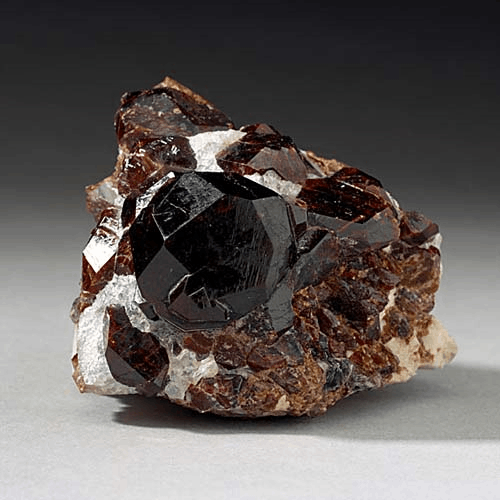

Spessartine - Mn3Al2(SiO4)3
Nesosilicates


Habit: Pale yellow to deep red and sometimes brown to black. Commonly euhedral crystals, dodecahedra or trapezohedra or in combination with other cubic forms; also fine or coarse granular, compact or massive. Vitreous luster; transparent to translucent. White streak.
Environment: Found in manganese-rich metamorphic rocks and igneous rocks; most commonly occurs in pegmatites, aplites and granites.
Etymology: From the locality where it was first found, near Spessart, Germany.